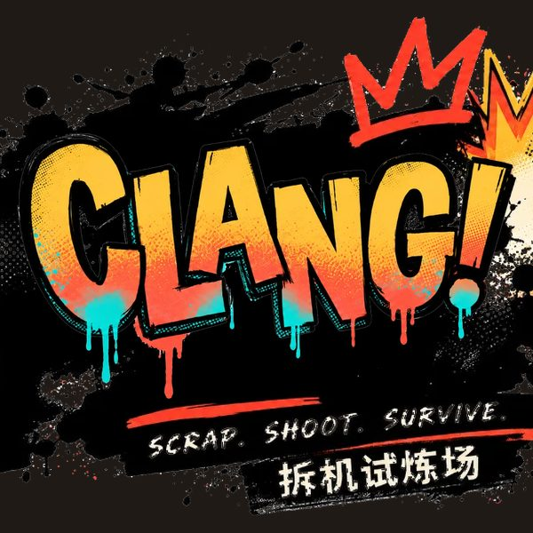

请把手机横过来玩
CLANG!
拆机试炼场
正在印刷…
0%
WASTELAND PRINT / 001
SCRAP · SHOOT · SURVIVE
INDUSTRIAL FIELD STUDY / 001
CLANG!
哐当！ · 拆机试炼场
SITE DIRECTORY
00 / 全场总览
A / 中央机械核心
B / 悬吊货运区
C / 压力容器区
D / 机械残骸区
E / 通风动力区
WAVE PLAYTEST / 拆机试炼
拆掉它们，
别被它们拆掉。
正在建立场景…
返回鸟瞰
回到入口
正在加载物理与几何结构…
WASD 移动 · Shift 切换奔跑 · Space 跳跃 · C 蹲伏（奔跑中按 C 滑铲）
左键 开火 · 右键 / Q 瞄准（Q切换） · R 装填 · 1–4 / 滚轮 切枪 · G 手雷 · E 钩爪 · F 处决
Esc 暂停 / 继续
T 入口 · H 高台 · V 收起武器 · M 鸟瞰 · F3 数据